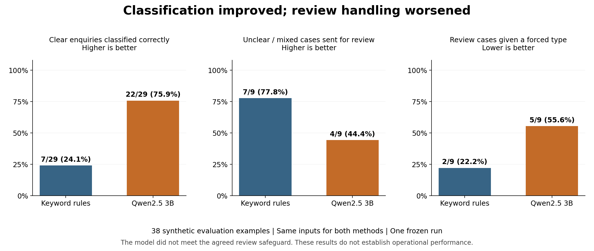

Customer journey · Requirements · Acceptance evidence
A cart customers
can actually review.
From a missing cart page to a small, tested read-only journey with separate empty, failure and recovery states.
ShopStackRead case study
Business analysis portfolio
I'm Kailas. These two independent projects show how I work through business problems, define requirements and check what the evidence supports.
Customer journeys · Process analysis · Requirements · Evaluation
Selected work
Each case study connects the business need to the decisions, artifacts and limits of the work.
Customer journey · Requirements · Acceptance evidence
From a missing cart page to a small, tested read-only journey with separate empty, failure and recovery states.

Options assessment · Data readiness · Evaluation
A limited classification experiment showed why higher clear-case accuracy was not enough to recommend rollout.
The way I work
Explore the current process, affected roles and the evidence behind the concern.
Separate requirements, assumptions, exceptions and decisions that need an owner.
Link the business need to process changes, acceptance criteria and test scenarios.
Compare observed results with agreed criteria, including failures and untested work.
About this portfolio
I use independent project work to practise business analysis through stakeholder questions, process walkthroughs, requirements and evidence review. One project explores a customer journey; the other assesses whether a small AI use case meets its own decision criteria.
The case studies distinguish my decisions from implementation support, simulated discussions from real execution, and demonstrated behaviour from business benefit.
Explore the source documents, decisions and execution evidence.